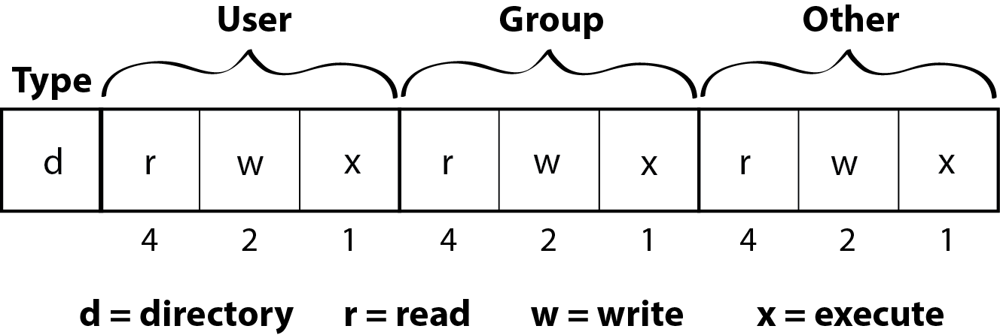
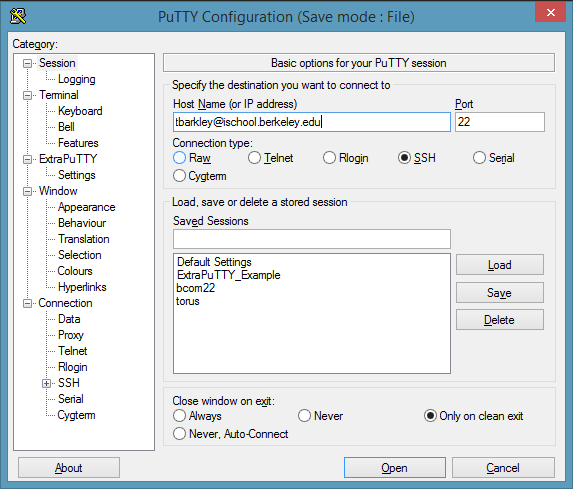

This is a very basic introduction to UNIX, designed for the UC
Berkeley School of Information's Data Mining and Analytics class. It is
focused on commands to help you obtain and investigate data sets. This page reviews basic commands. Click over to the Data Manipulation page to practice applying these commands to analyze a data set of Yelp reviews.
On a Mac computer, the shell can be accessed through the default application called Terminal.
On Windows, if you want to run UNIX commands directly on your machine, you need to download a tool. The most commonly used is cygwin. Cygwin has a lot of functionality that you may or may not want to install- you might check out this tutorial or others if you want to install it. Alternatively, if you have installed git on your windows machine, you probably have git bash, which you can use to practice the commands in this tutorial. Finally, instead of running the commands locally, you could instead log on to a remote machine with a UNIX-based operating system and work with your data there. If you are an I School student, you can use your I School computing account to log in to one of the I School linux servers. If you aren't an I School student but are enrolled in an I School class, ask your instructors for an I School computing account.
The general form of a UNIX command is:
<command> [-option(s)] [arguments]
A command is executed by hitting the Enter key. In general (with some exceptions):
--. For instance,
ls -a -l -R is equivalent to ls -alR.UNIX processes, such as the commands we are practicing here, open three files: standard input, standard output, and standard error. For our purposes, we'll focus on standard output: you can read more about standard input, output, and error here.
By default, the output of a command gets printed to the screen. We'll use the following to redirect standard output:
> to redirect output to a file (creating a new file, or overwriting an existing file)>> to append output to a file| to redirect output to another commandThe man command lets you view UNIX manual pages within the
shell. For example, typing man cat will display the online
manual for the cat command.
Just think of this guy when you're not sure how to use a UNIX command!
man cat
CAT(1) BSD General Commands Manual CAT(1)
NAME
cat -- concatenate and print files
SYNOPSIS
cat [-benstuv] [file ...]
DESCRIPTION
The cat utility reads files sequentially, writing them to the standard out-
put. The file operands are processed in command-line order. If file is a
single dash (`-') or absent, cat reads from the standard input. If file is
a UNIX domain socket, cat connects to it and then reads it until EOF. This
complements the UNIX domain binding capability available in inetd(8).
The options are as follows:
-b Number the non-blank output lines, starting at 1.
-e Display non-printing characters (see the -v option), and display a
dollar sign (`$') at the end of each line.
The following key strokes are used to navigate through the
man pages:
You can create and edit text files directly from your terminal. vi and emacs are two commonly used text editors with a lot of rich functionality. There are also simpler editors like pico, which is available on the I School server. To use a text editor, type in the name of the editor followed by the filename, for example: pico example.txt. The editor will then display your file for editing.
This section explains how file and directory permisisons are represented and how to change them.
When you type the command ls -l (list long), the first column
specifies the current permissions of all (non-hidden) files and directories
located in your current directory. It may look like this:
drwxr-xr-x
The first character specifies the file type: - for an ordinary file, d for a directory, and l for a symbolic link
The next nine characters are in groups of three, each representing the permissions for one of UNIX's three permission-tier categories: user (the owner of the file, listed in the 3rd field of ls -l), group, (the group owner of the file, listed in the 4th field of ls -l), and other (the permissions for everybody else).
The first character of each group of three is either a r or a - to indicate whether that category of user has read permission over the file. For an ordinary file, read permission means that category of user can view and open the file. For a directory, read permission means that the list of filenames stored in the directory is viewable (ie that category of user can use the ls command on that directory).
The second character of each group of three is either a w or a - to indicate whether that category of user has write permission over the file. For an ordinary file, write permission means that category of user can edit the file. For a directory, write permission means that the category of user can create or delete files within the directory.
The third character of each group of three is either a x or a - to indicate whether that category of user has execute permission over the file. For an ordinary file, execute permission means that the category of user can run the file as code. For a directory, execute permission means that the category of user can 'pass through' the directory (ie that category of user can use the cd command to navigate through the directory.)
Thus, the code snippet shown at the beginning of this section refers to a directory for which the user (owner) category has read, write, and execute privileges while the group and other categories have only read and execute privileges.
The permissions of a file can be changed with the chmod command, which lets you add or remove permissions for the different permission tiers. From the previous example, adding write permissions for the group category to a file called example.txt would be done as so:
chmod g+w example.txt
To then add write permissions for the other category:
chmod o+w example.txt
To then remove write and execute permissions for the group and other categories:
chmod go-xw example.txt
The above examples illustrate how the chmod command works: chmod is followed by a sequence of characters denoting the user categories for which to change permissions (u for user and/or g for group and/or o for other, or a for all (same as ugo), the action to take (+ to add permissions or - to remove permissions), and the permission(s) to change (r for read, w for write, and/or x for execute). This sequence of characters is followed by the file name for which permission changes are to be applied.
This section shows commands to connect to remote UNIX machines using
ssh and securely transfer files using scp.
The ssh command lets you securely connect to a remote UNIX
machine. You can use this to, for example, remotely connect to the I School server. If your I School computing account user name is user1, you could log in to the I School UNIX machine like so:
ssh user1@ischool.berkeley.edu
After being prompted for your password, you would be taken to your home directory on the I School server
If you use Windows and don't have a program like cygwin that lets you run UNIX commands locally, you can download putty which will let you ssh into UNIX servers. The screenshot below shows an example of using ssh to log in to the I School server.
The scp command allows for the secure transferring files to and
from a remote machine. With scp, the remote location is specified as hostname:filename
To copy a file called example.txt from your current local directory to a directory called data that's located within your home directory on hostname ischool.berkeley.edu:
scp example.txt user1@ischool.berkeley.edu:data/
To copy a file called example.txt in the data directory of your home directory on hostname ischool.berkeley.edu into your current local directory:
scp user1@ischool.berkeley.edu:data/example.txt .
In the above case, the . stands for your current directory.
The -r option of scp copies an entire directory tree. To copy your entire remote home directory to your current local directory:
scp -r user1@ischool.berkeley.edu:. .
The wget command lets you download files from the web. The following command downloads a zip file from example.com
wget http://example.com/example.zip
This section shows some simple commands that can be used to subset data for output to a file or for input into another command.
The head command lets you view the first n lines of a
file. By default, head displays the first 10 lines. Use the
-n option to specify the number of lines. In files with a
header, head -1 <file> will display the header.
The tail command lets you view the last n lines of a
file. Like head, it displays the last 10 lines by default. Use the
-n option to specify the number of lines. With tail, it is
also possible to specify where you want to begin displaying the file, using
a +. tail +2 file will display a file from the second
line onward. In files with a header, this command displays every line
except the header.
The sort command lets you sort lines of a text file.
sort -b <file> ignores leading blanks
sort -f <file> ignores case of letters (folds lower case to upper case characters)
sort -n <file> compares according to string numerical value
sort -r <file> reverses the sorting order
sort -u <file> removes repeated lines
sort -k n <file> sorts on the nth field
sort -tdelim <file> specifies the field delimiter as delim
The cut command lets you extract data from a file by column or field. This command can be executed in three forms:
cut -b <list> <file>, where the list after the -b option specifies byte position
cut -c <list> <file>, where the list after the -c option specifies character position
cut -f <list> -d <delim> <file>, where the list after the -f option specifies field position (column number) and the argument after -d is the file delimiter.
The uniq command lets you find unique (or duplicated) lines
in a file. It requires input to be sorted, so typically output from sort is piped to uniq.
uniq -u <file> selects non-repeating lines
uniq -d <file> selects one copy of duplicated lines
uniq -c <file> prepends each line with a count of the number of times it occurs
The tr command lets you do character substitution. The format of the tr command is tr -option(s) 'to_replace' 'replace_with' standard_input, where the to_replace and replace_with expressions are character sequences of the same length. Unlike the other commands in this section, tr does not take a filename as an argument; rather, it can take input from a pipe, or you can redirect input from a file by doing tr -option(s) 'to_replace' 'replace_with' < filename
tr -d 'char(s)' deletes characters matching the specified sequence
tr -s 'char' reduces repeating consecutive occurrences of the specified character to a single character. This is useful for eliminating redundant spaces, by doing tr -s ' '
This section covers more advanced commands for manipulating data. It
starts with an overview of regular expressions, which the commands
in this section make great use of. It then goes over the grep,
sed, and awk commands.
The commands in this section take advantage of regular expressions to do advanced pattern matching. Here, we list some of the essential regular expressions to know. If you are new to regular expressions or want to learn more, please visit some of the suggested resources.
Representing single characters
. matches anything\d matches a digit\D matches a non-digit\s matches whitespace\S matches non-whitespacea matches a[abc] matches any character a, b, or c[a-c] matches any character a, b, or c[a-zA-Z] matches any character a-z or A-Z[a-zA-Z0-9] matches any character a-z or A-Z or number
[^abc] matches any character not a, b, or cSpecifying Sequences
a* matches 0 or more occurences of aa? matches 0 or 1 occurences of aa+ matches 1 or more occurences of aa{x} matches x occurences of aa{x,} matches at least x occurences of aa{x,y} matches between x and y occurences of aSpecifying Locations
^abc matches abc at the beginning of the lineabc$ matches abc at the end of the lineIt is important to note that regular expressions make use of ‘metacharacters’
like *, ?, +, etc. If you want to
use regular expressions to, for example, find lines that end with a
question mark, you would need to escape the question mark with a backslash
like so: \?$.
The grep command searches for patterns within files, and
returns lines that have a match.The format of the grep command is:
grep [-option(s)] ['pattern'] [filename(s)]
Some useful grep options include:
-i to ignore the case of the pattern when searching in the
file
-v to select lines that don't match the pattern-w to select only lines where the match is a whole word
(rather than a part of the word)
-f to read in patterns from a file, one pattern per line.
The pattern given to grep can be a simple string or a more complex regular expression. To be safe, it should always be put in quotes so that the shell does not interpret and replace the metacharacters.
Sed stands for stream editor. It can do a lot, but we’ll
focus on its usage in substitution.The format of the sed command is:
sed [-option(s)] ['address action']
The address specifies a line number or a range of line numbers:
(1,7) would select lines 1-7. The actions include
deleting, printing, appending, and replacing text.
For substitution, the ‘address action’ part of the sed command takes the
following form: address/toreplace/replacewith/flags.
toreplace can be a regular expression. An important flag to know is
g, which replaces all occurences of toreplace with replacewith.
Without the g flag, sed only replaces the first occurence.
Awk is a programming language useful for processing tabular
data. The format for an awk command is:
awk [-option(s)] ['selection_criteria {action}'] [filename(s)]
Use the -F
option to specify the field delimiter for the file. The default delimiter
for awk is contiguous spaces and tabs.
The selection_criteria are like the addressing in sed,
but can take advantage of awk built in variables. Built-in
variables include:
$1 for line 1$0 for all linesNR for record numberThe selection_criteria can take advantage of operators to subset the data. Operators include:
<, <=, >, >= for
less than, less than or equal to, greater than, and greater than or equal
to
== for equal to!= for not equal to~ to match a regular expression!~ to match everything but a regular expression&& for logical and|| for logical or! for logical notTo use regular expressions in an awk
selection_criteria, enclose them in forward slashes.The below
command prints out lines from a csv file for which the first column begins
with ‘words’ or ‘Words’:
awk -F, '$1 ~ /^[Ww]ords/ { print }' test.csv
For our tutorial purposes, the action will be a print statement. In more advanced contexts, it can be an awk program.
There is a lot more to UNIX than is explained on this short page. We encourage you to check out the following resources to learn more